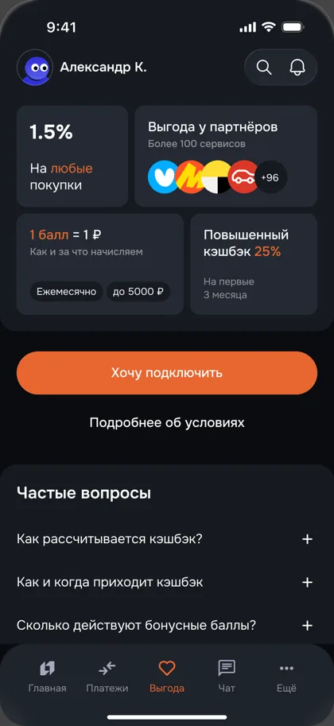
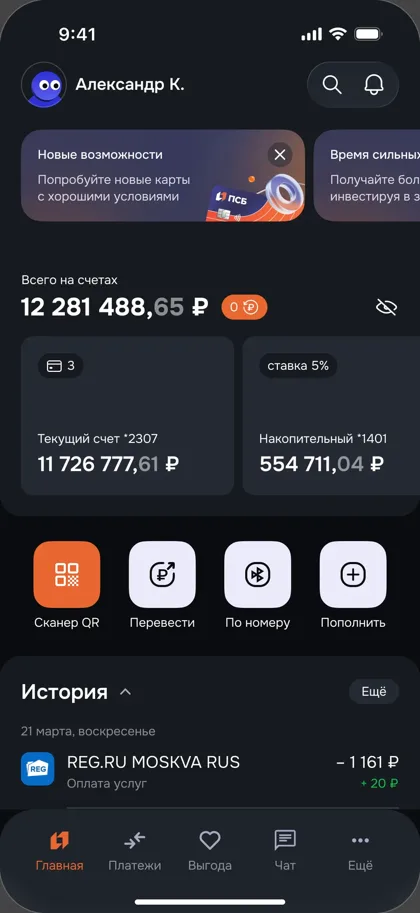
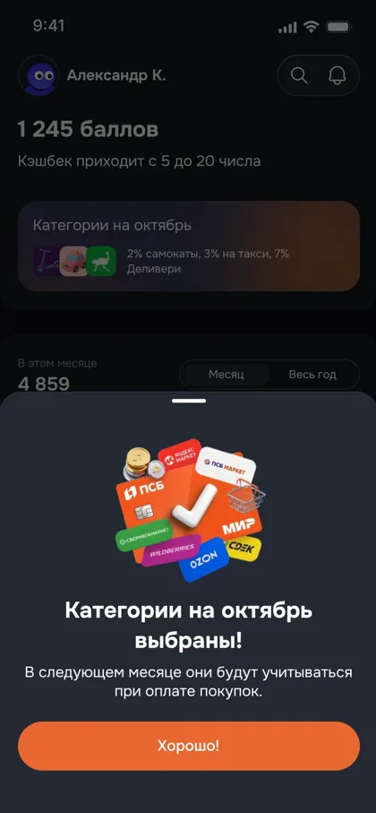
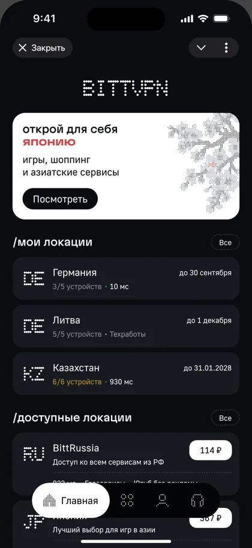

PSB-Bank Redesign concept
- Что
- Ключевые сценарии банка
- Роль
- Продуктовый дизайн, вдвоём
- Проверка
- Юзабилити-тест, 30 клиентов
- Год
- 2026 · B2C
Контент тот же: профиль, лента кейсов и кусок кейса PSB с итогом теста. Меняются палитра, шрифты, формы и фон. Наброски грубые: смотрим на характер, а не на пиксели.
Белый лист продуктового дизайнера: холодная бумага, чёрные чернила, один ультрамарин. Работа на первом плане, оформление молчит.
Под каждым кейсом паспорт, как в спецификации: что, роль, на чём проверено, год. Цифры теста крупно, как главный аргумент.
Игра почти уходит: остаются «lvl 25» и сцены внутри кейса. Самый строгий и понятный нанимающему, но меньше вас лично.
Главная




Кейс PSB, решение
Решения · кешбэк
Раньше кешбэк подключали через почту и браузер, теперь — в два касания на главной. Тест показал, что путь стал в четыре раза быстрее.
Медиана вместо 105 с
Нашли кнопку с первого клика
Вместо двенадцати
Та же MMORPG, но холодная: не пергамент, а карта мира в клетку. Белые карточки с пиксельными углами, тёмно-синие чернила, оранжевый маркер квеста.
Кейсы как места на карте: у каждого «регион», у нового — маркер «!». Заголовки остаются пиксельными.
Ближе всего к нынешнему сайту: меньше переделок, но и разница меньше. Сетка на фоне может читаться как чертёж, а не как игра.
Главная
Переосмысление ключевых сценариев в мобильном приложении банка
Telegram Mini App для безопасного доступа в интернет через VPN
Кейс PSB, решение
Решения
Раньше кешбэк подключали через почту и браузер, теперь — в два касания на главной. Тест показал, что путь стал в четыре раза быстрее.
Медиана вместо 105 с
Нашли кнопку с первого клика
Вместо двенадцати
Полка с картриджами: белый фон, а каждый кейс — сплошной блок в цвете своего продукта. Жёсткие тени со сдвигом, как у кнопок в старых играх.
Цвет переходит в кейс: у PSB страница с оранжевыми акцентами, у BittVPN — с чёрными. Каждый кейс узнаётся с ленты.
Самый смелый и шумный. Обложки придётся пересобрать под цвет, пастельная нежность Фрирен и Зельды уходит в сторону Nintendo.
Главная
Переосмысление ключевых сценариев в мобильном приложении банка
Открыть кейс →Telegram Mini App для безопасного доступа в интернет через VPN
Открыть кейс →Кейс PSB, решение
Раньше кешбэк подключали через почту и браузер, теперь — в два касания на главной. Тест показал, что путь стал в четыре раза быстрее.
Медиана вместо 105 с
Нашли кнопку с первого клика
Вместо двенадцати